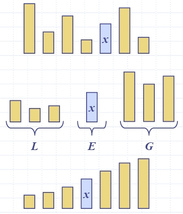

|  |
|
| Algorithm partition(S, p) Input sequence S, position p of pivot Output subsequences L, E, G of the elements of S less than, equal to, or greater than the pivot, resp. L, E, G ← empty sequences x ← S.remove(p) while ¬S.isEmpty() y ← S.remove(S.first()) if y < x L.insertLast(y) else if y = x E.insertLast(y) else { y > x } G.insertLast(y) return L, E, G |
| Algorithm inPlaceQuickSort(S, l, r) Input: sequence S, ranks l and r Output: sequence S with the elements of rank between l and r rearranged in increasing order if l ≥ r return i ← a random integer between l and r x ← S.elemAtRank(i) (h, k) ← inPlacePartition(x) inPlaceQuickSort(S, l, h − 1) inPlaceQuickSort(S, k + 1, r) |
| Algorithm | Time |
|
|
insertion-sort selection-sort bubble-sort |
O(n2) |
|
| quick-sort |
O(n2)
worst case and O(n log n) in average |
|
| heap-sort | O(n log n) |
|
| merge-sort | O(n log n) |
|
| bucket-sort radix-sort |
O(n) |
|